软件准备
软件：VMware
镜像：CentOS7
虚拟机准备
打开 VMware 选择新建虚拟机
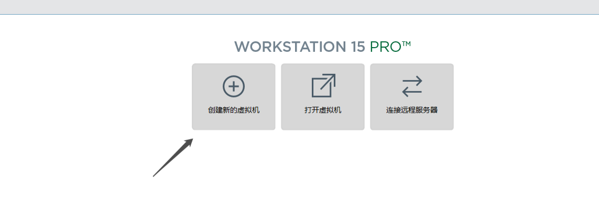
典型安装与自定义安装
- 典型安装：
VMware会将主流的配置应用在虚拟机的操作系统上，对于新手来很友好 - 自定义安装：自定义安装可以针对性的把一些资源加强，把不需要的资源移除。避免资源浪费
这里选择典型安装
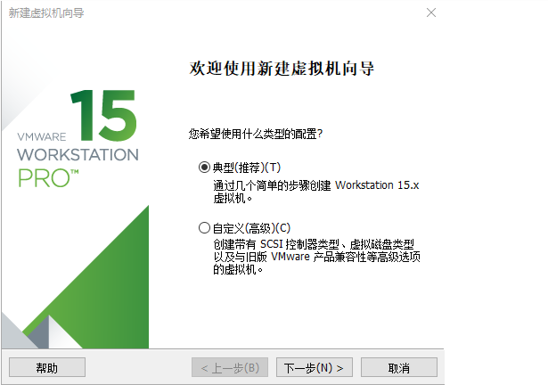x
选择稍后安装操作系统
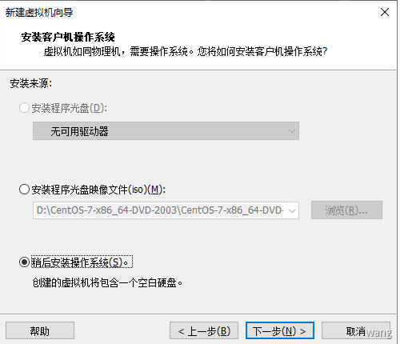
选择操作系统为Linux
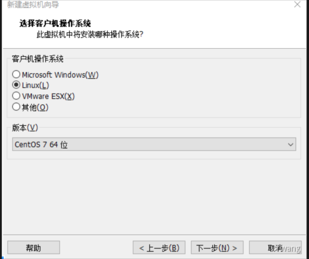
输入虚机名称和存储位置
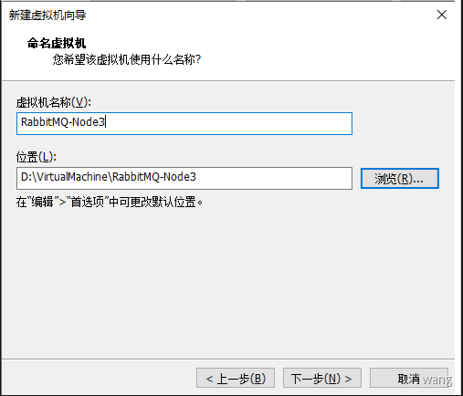
设置虚机磁盘大小

自定义硬件
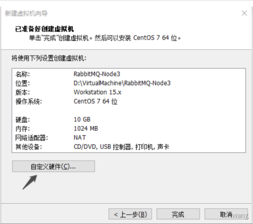
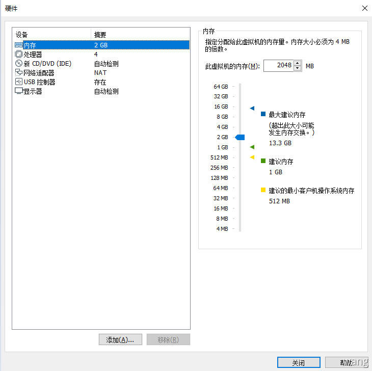
根据自己电脑实际情况分配
- 内存：2G
- 处理器数量：2 / 内核数量：2
- 网络适配器：NAT 模式
- 移除打印机和声卡
Centos安装
在创建好的虚机上右键设置
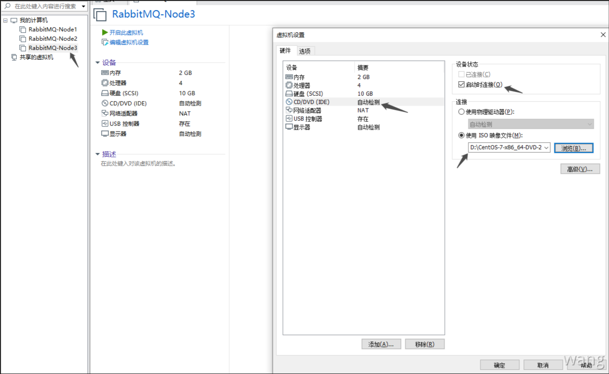
开启虚拟机
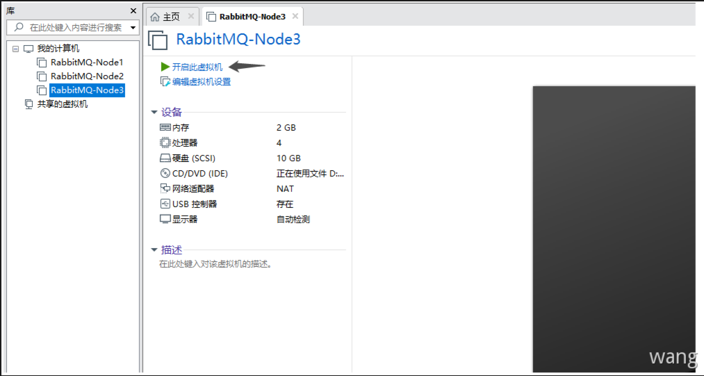
安装操作系统
开启虚拟机后会出现以下界面:
Install CentOS 7安装CentOS 7Test this media & install CentOS 7测试安装文件并安装CentOS 7Troubleshooting修复故障
选择第一项，安装CentOS 7，回车进入下面的界面
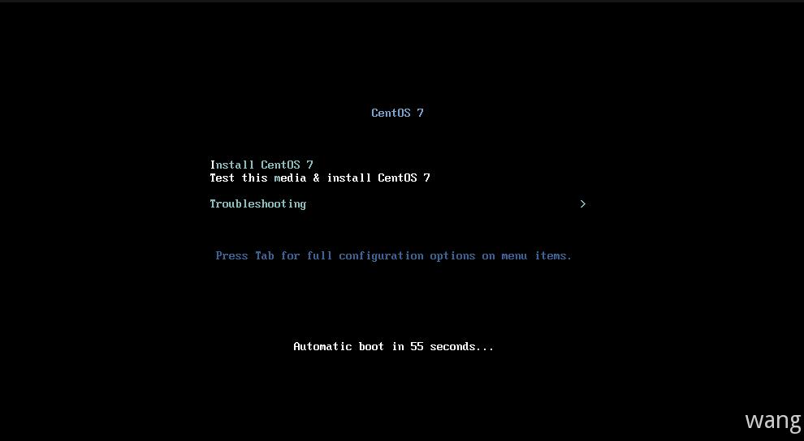
选择安装过程中使用的语言
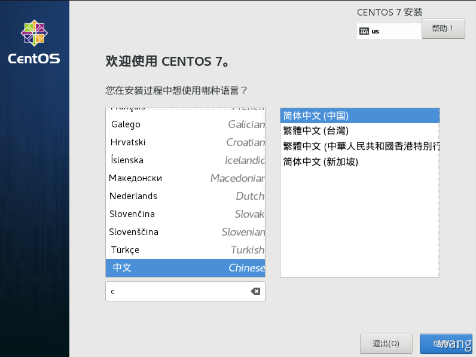
安装位置及分区设置；这里分区使用自动配置
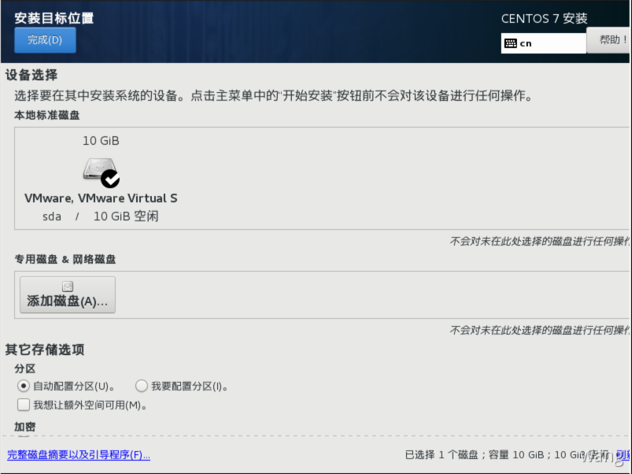
软件选择：最小安装

网络和主机名：设置主机名称开启网络连接
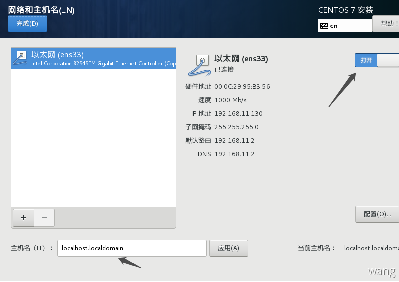
开始安装
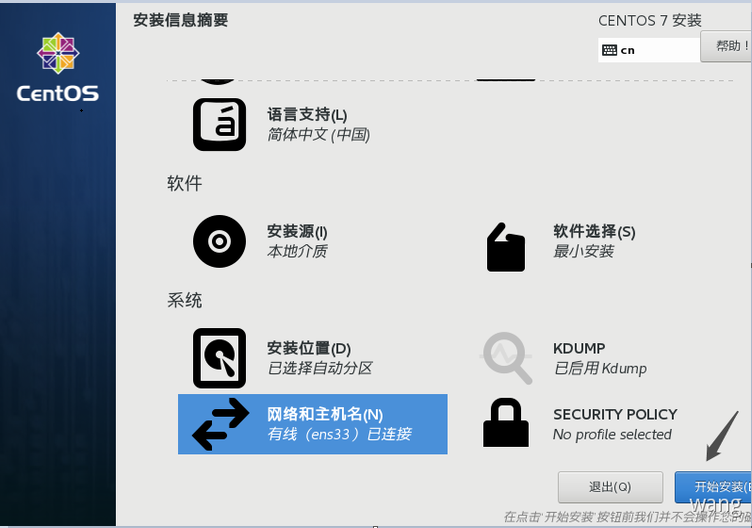
设置Root密码并创建新的用户admin
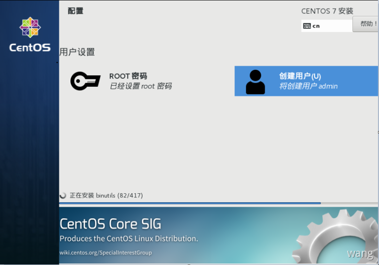
等待安装完成重启系统即可